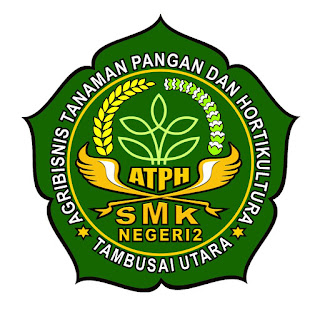
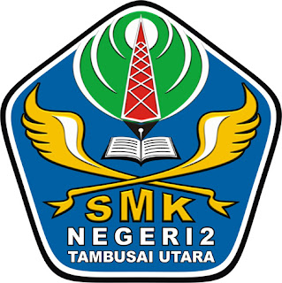
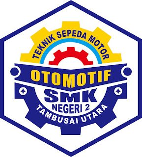

profil sekolah
di tulis oleh Nur hasarah pada tanggal 11 agustus 2023
Profil SMK Negeri 2 Tambusai Utara - SMK Negeri 2 Tambusai Utara merupakan Sekolah Menengah Kejuruan yang terletak di desa Mahato. SMK Negeri 2 Tambusai Utara berdiri pada tahun 2012, kemudian berproses menjadi Sekolah Negeri Pada tahun 2015 dengan ijin operasional 421.5/DPPO-DIKMEN/139/2015 dari pemerintah daerah Rokan Hulu.
NPSN : 69733924
Status Sekolah : Negeri
Bentuk Pendidikan : SMK
Alamat : MAHATO
RT / RW : 5 / 3
Dusun:Kuala Mahato
Desa / Kelurahan :MAHATO
Kecamatan : Kec. Tembusai Utara
Kabupaten : Kab. Rokan Hulu
Propinsi : Prop. Riau
Kode Pos : 28558
SMK Negeri 2 Tambusai Utara pada tahun 2015 ini mempunyai jumlah siswa sebanyak 102 dengan rincian PD Kelas X:46, PD Kelas XI:30 dan PD Kelas XII:26. SMK Negeri 2 Tambusai Utara mempunyai tenaga pengajar dan pendidik dengan rincian Jumlah Guru:16 dan Jumlah Pegawai:1
Nama jurusan smk negeri 2 tambusai utara



- Agribisnis tanaman pangan dan hortikultura
- Teknik komputer dan jaringan
- Teknik ssepeda motor
Profil Kepala Sekolah SMK Negeri 2 Tambusai Utara Tarmizi, S.Ag - Kelahiran Kuala Mahato pada 12-08-1972 silam. Beliau mempunyai 3 Orang anak dan 1 Istri. Berkancah dalam dunia pendidikan merupkan Cita-cita beliau.